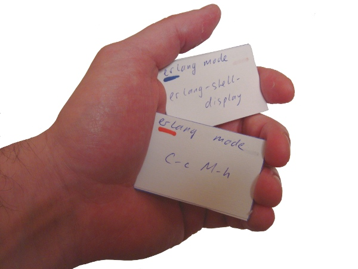

<!DOCTYPE html>
<html>
  <meta charset='utf-8'/>
  <title>Learn You Emacs Keys for Great Good!</title>
  <link rel="stylesheet" href="main.css">
  <script type="text/javascript" src="jquery-1.7.1.min.js"></script>
  <script type="text/javascript" src="data.js"></script>
  <script type="text/javascript" src="wset.js"></script>
  <script type="text/javascript" src="main.js"></script>
</html>
<body>
  <h1>Learn You Emacs Keys for Great Good!</h1>

  <div id="intro">

    <p style="float:left;"><a href="javascript:switchState('select_set');">Skin Intro</a></p>
    <p style="float:right;">English | <a href="index.ru.html">Русский</a></p>

    <h2 style="clear:both;">Intro</h2>

    <p>There is an interesting way to learn foreign language words by taking
      a stack of paper cards with the size like a matchbox. There is the
      word in one language on one side of the card and its translation to
      other language on the other side.</p>

    <p>You can put cards in your pocket and at every opportunity (eg, going by the
      subway) get them and learn words. Cards can be shuffled so words are
      in random order. Some words that are particularly difficult to
      remember, you can put in a separate stack, and learn them
      separately. After that you can return them to the main stack and again memorize them
      with others.</p>

    <p>It is an effective and convenient method. And it can be used not
      only for learning foreign languages. You can learn many things that
      way. For example you can learn emacs editor keys. And that is the goal
      of this project :)</p>

    

    <p>I suppose you're more or less familiar with emacs. You learn it
      somehow and use it regularly. If not you need to start from its
      tutorial and documentation.</p>

    <p>Because I don't explain every command, but only give match between
      command and hot key it is called by. If you don't know what particular
      command do you can use <b>C&#x2011;h&nbsp;f&nbsp;command&#x2011;name</b> to
      find it out.</p>

    <p>Cards are divided into several sets, and you can take to learn one or several of them.</p>

    <p style="text-align:center;"><a href="javascript:switchState('select_set');">Lets Go :)</a></p>

  </div>
  
  <div id="select_set">
    <div class="navig">
      <a href="javascript:switchState('intro');">Back to Intro</a>
    </div>
    <div id="set_list"></div>
    <input type="button" value="Start fun-&gt;key" onClick="switchState('view_set', false);"/>
    <input type="button" value="Start key-&gt;fun" onClick="switchState('view_set', true);"/>
  </div>
  
  <div id="view_set">
    <div class="navig">
      <a href="javascript:switchState('intro');">Intro</a> &nbsp; &nbsp;
      <a href="javascript:switchState('select_set');">Select Sets</a>
    </div>
    <div id="card">
      <div id="set_title">Basic Set</div>
      <div id="num_items">34/52</div>
      <div id="info">
	<div id="info_key">key</div>
	<div id="info_fun">fun</div>
	<div id="info_comment">comment</div>
      </div>
      <div id="controls">
	<a href="javascript:WorkingSet.flip();">Flip</a> &nbsp; &nbsp;
	<a href="javascript:WorkingSet.remind();">Remind</a> &nbsp; &nbsp;
	<a href="javascript:WorkingSet.next();">Next</a>
      </div>
      <div id="end_controls">
	<a href="javascript:switchState('select_set');">Back</a> &nbsp; &nbsp;
	<a href="javascript:WorkingSet.repeat();">Repeat</a>
      </div>
    </div>
  </div>

  <div id="copyright">
    <a href="https://plus.google.com/u/0/111796213623287288776/about" target="_blank">Yuri Zhloba</a> aka yzh44yzh
</body>
